📖 Nossa História
O Time Amigos de Castro nasceu há mais de 22 anos, em uma reunião de amigos apaixonados por futebol na cidade de Castro - PR. Começamos jogando nas quadras locais e, com o passar dos anos, fortalecemos nossos laços de amizade, disciplina e espírito esportivo.
Hoje somos uma família com 30 membros ativos, que se reúne semanalmente não apenas para jogar, mas também para confraternizar e fortalecer nossos laços fora de campo.
Filosofia do Time TTsn não é só sobre futebol, é sobre amizade, resenha, churrasco e cerveja. Seu lema, estampado com orgulho na logo do time, define bem sua essência: “Joga pouco e bebe muito” Aqui, ninguém se preocupa em ser craque. Se o gol não sai no campo, sai no copo!
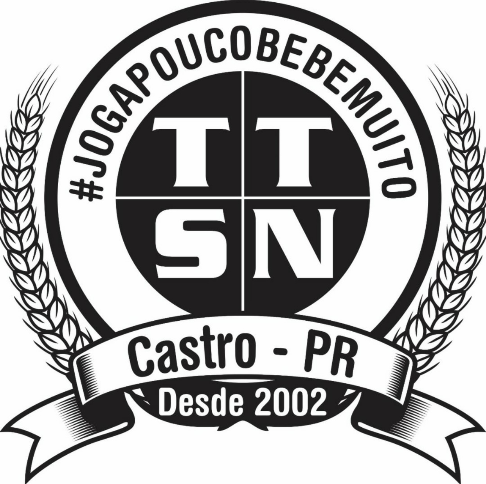🏟️ Nosso Espaço
Com muito esforço e união, construímos nosso próprio espaço. Uma sede equipada com área de lazer, churrasqueira e salão para eventos.
🍖 A Confraria Local do Churrasco Paralelamente ao time, surgiu a “Confraria Local do Churrasco”, uma instituição quase tão séria quanto o próprio futebol (ou até mais). Oficializada em 08/03/2024, ela tem regras claras: Cada terça, alguém é o Churrasqueiro Oficial. O churrasco começa antes, durante e depois do jogo. Quem não joga, ajuda na grelha ou no cooler. Carne boa, cerveja trincando e música de boteco são obrigatórios.
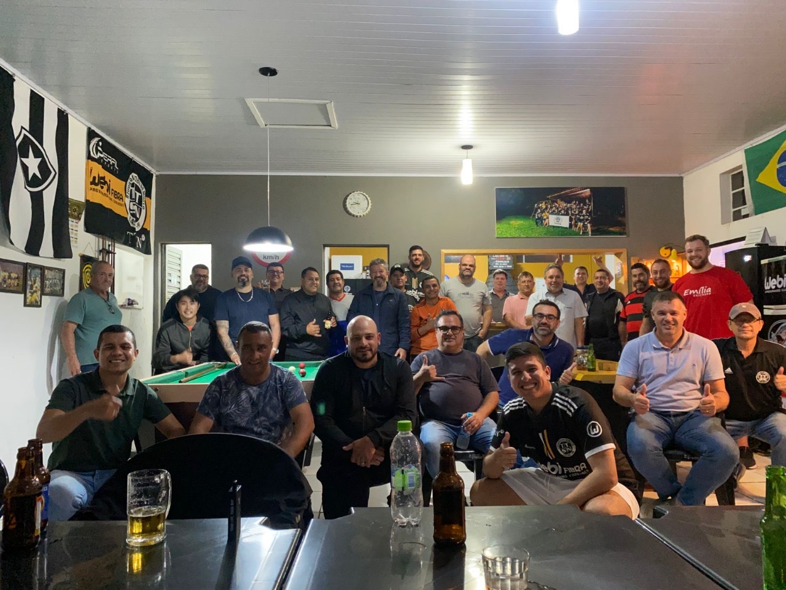 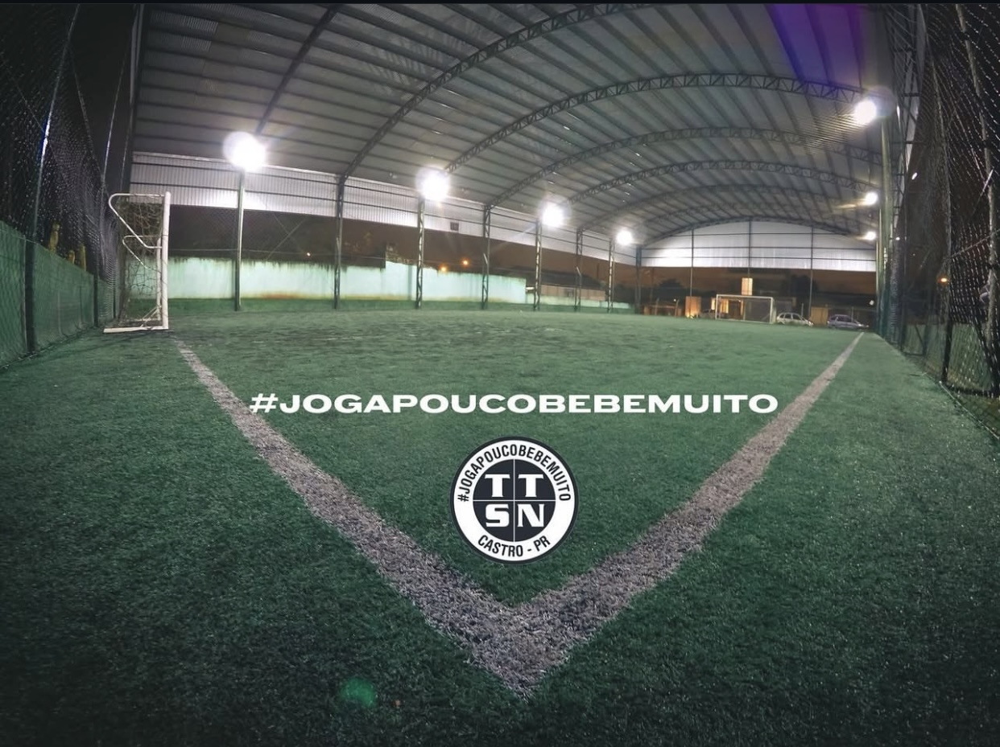🔥 Churrasco das Terças
Todas as terças-feiras, após nosso jogo, é tradição nos reunirmos para aquele churrasco de confraternização. Uma noite de resenha, risadas e fortalecimento da amizade.
Se o jogo começa às 19:30h, o churrasco começa às 20:30h, porque ninguém aguenta correr mais que um tempo. As discussões mais acaloradas são sobre quem furou mais bola, quem correu menos e quem bebe mais rápido.
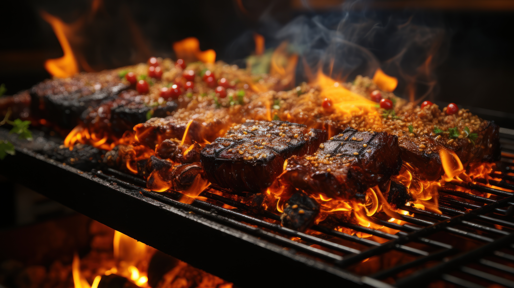

📸 Galeria
Confira alguns dos nossos melhores momentos:
Uma galeria de fotos é muito mais do que um simples conjunto de imagens. É um espaço onde momentos se transformam em eternidade, onde cada clique carrega uma história, uma lembrança e uma emoção.
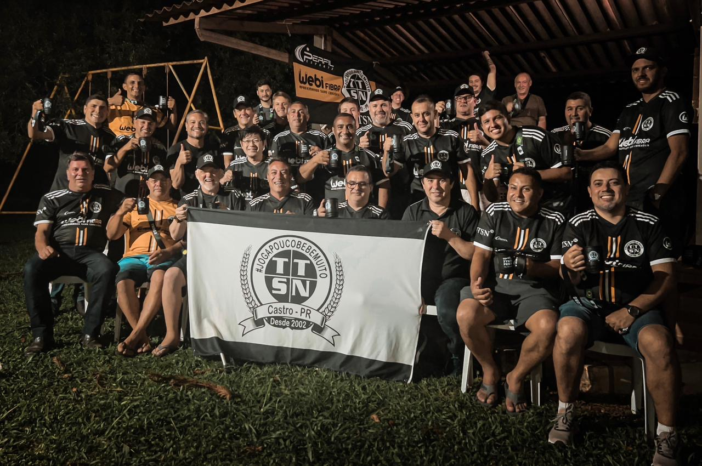 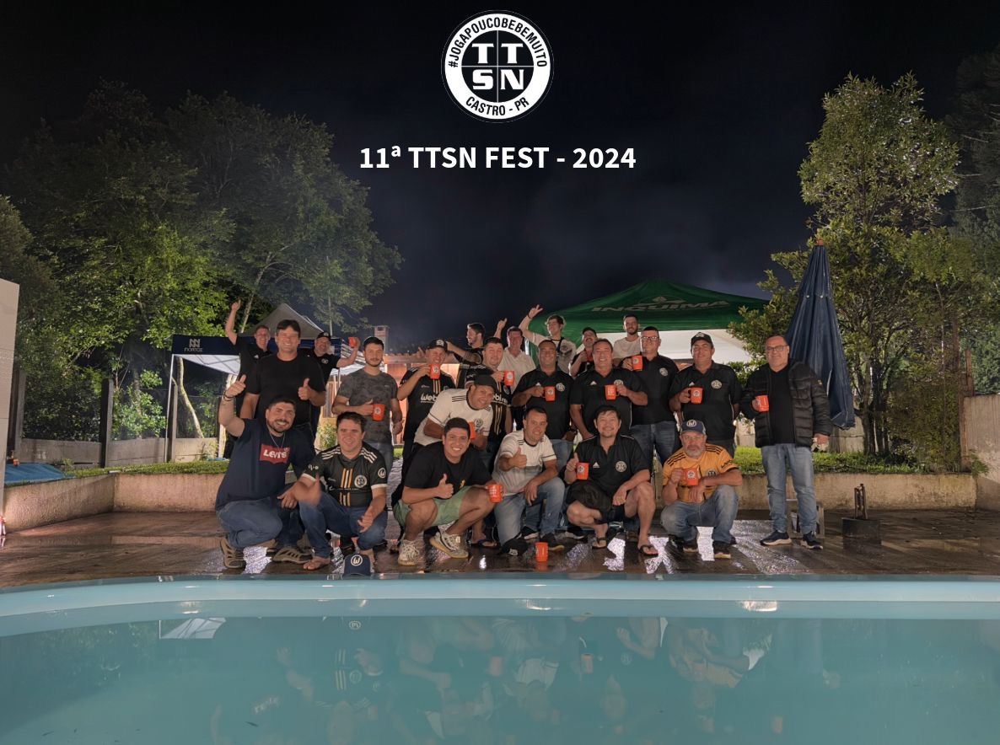 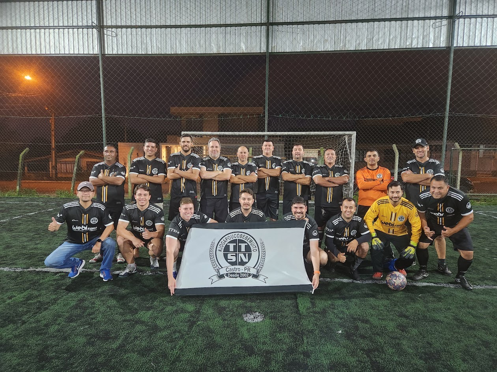 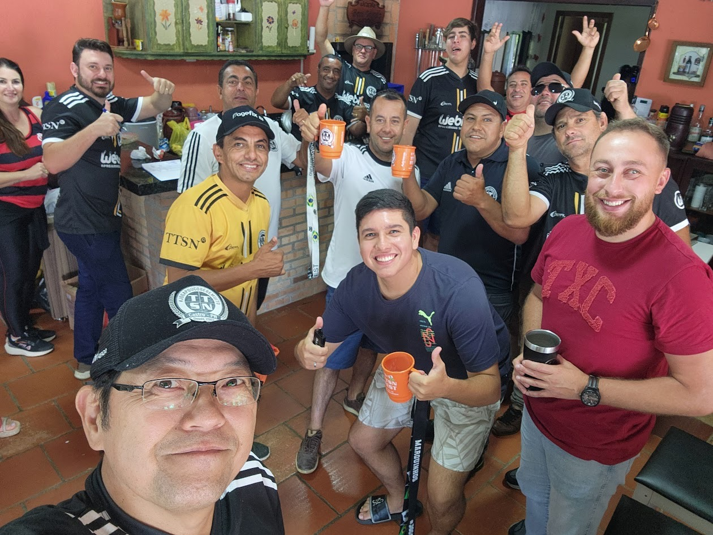 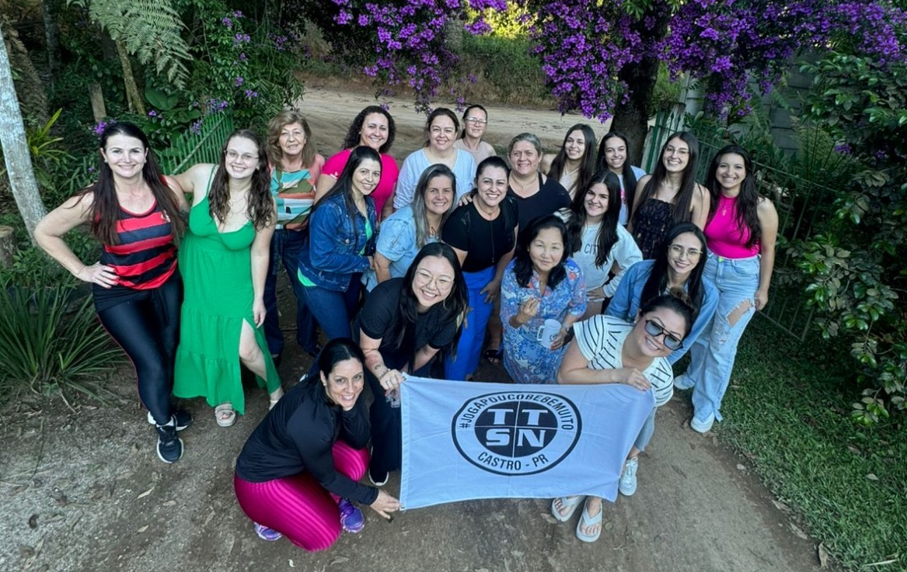 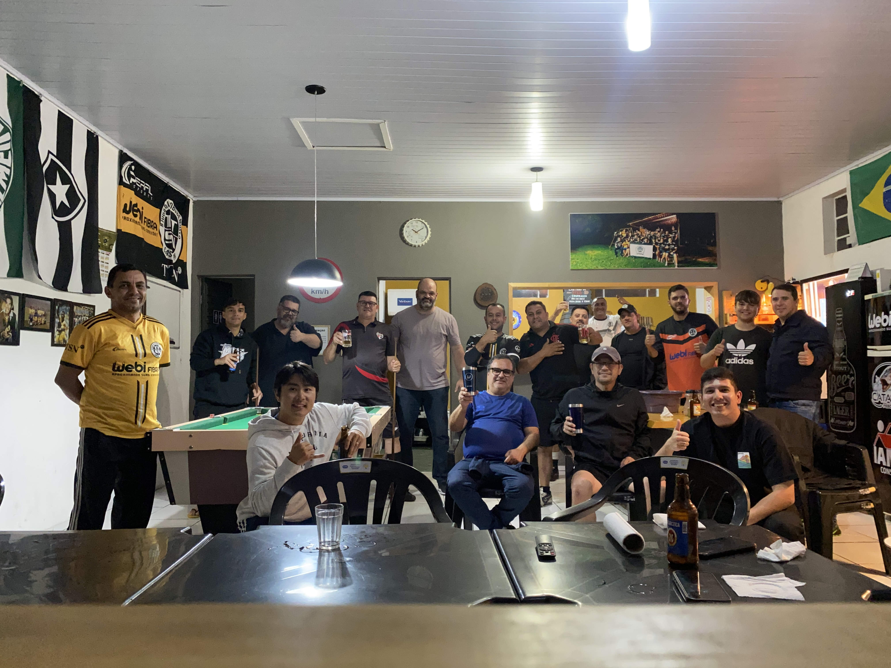 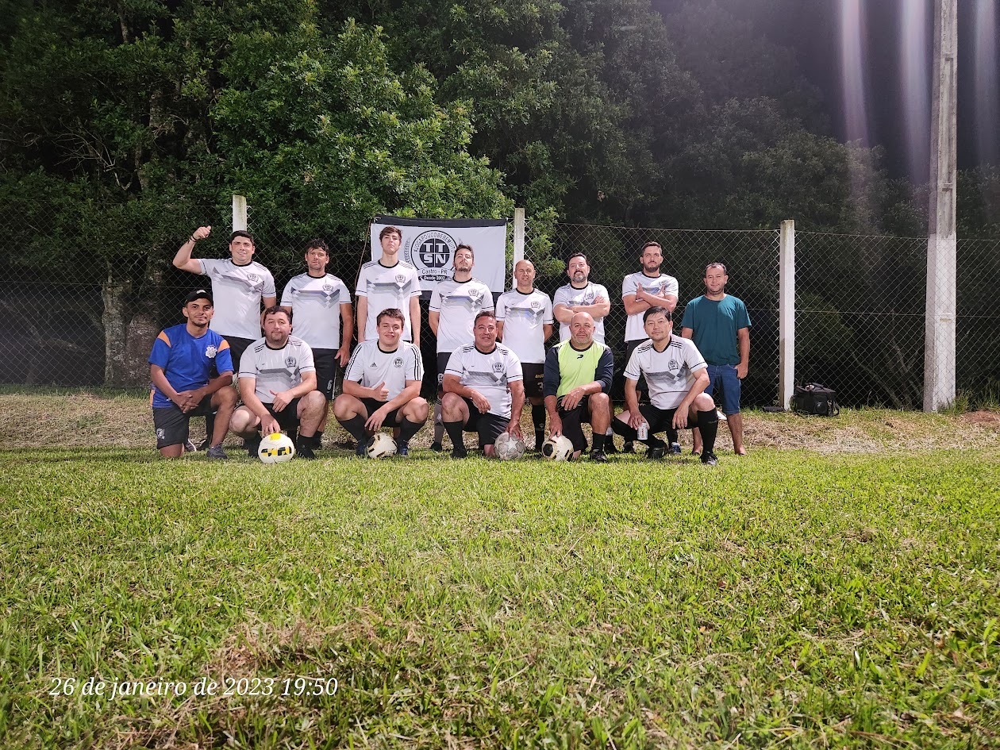 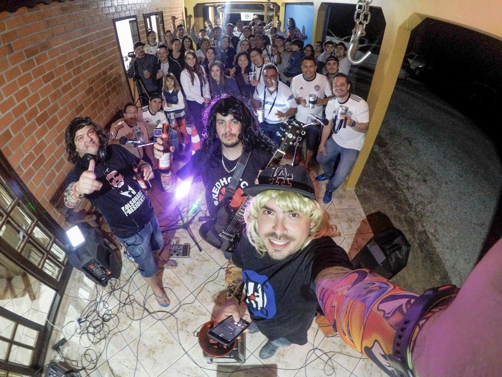📍 Contato
Estamos localizados em Castro - Paraná.
Siga-nos no Intagram: